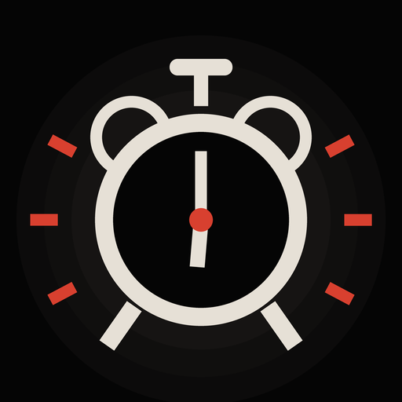
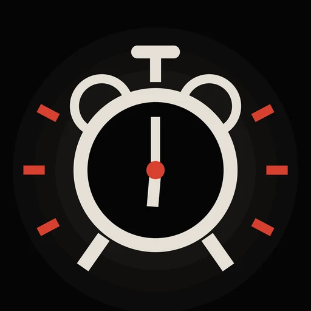

Snooze Control · alarm for iPhoneAn alarm that takes snoozing personally.
Pick who wakes you up. Every snooze makes them louder, sharper and more specific, until you're out of bed or they give up on you completely.

A real morning · 0:45Good morning. Your brother called. He's doing great. I just thought you should hear that first thing.
Five characters across one morning, as they sound in the app. On a real alarm each level plays at full volume and loops its beeps between lines.
Every snooze changes the alarm.
Snooze still works instantly, every time. What changes is everything around it: the title on your Lock Screen, the label on the snooze button, the pitch and speed of the beeps, and what gets said next.
Snooze length is yours to set, from 5 to 15 minutes. Every snooze after the sixth stays at level six.
Six people who expected more from you.
Every character is fictional, written by hand and recorded ahead of time, so nothing is generated while your alarm is ringing. Press play to hear one.
Your Bestie
Zero filter. Has the receipts. The default.
Wake up. Your phone has more battery than you have ambition, and it's at nine percent.
Mom
Not mad. Just disappointed. And telling everyone.
Four. I'm not disappointed. Disappointed would mean I expected something.
Coach Brick
Has coached champions. Got stuck with you.
Two snoozes. You've got the drive of a parked car. With the hazards on. Out of gas.
Lady Penelope
Old money. No patience. Openly ashamed of you.
Two snoozes. You're not lazy, darling. Lazy implies you'd be doing something otherwise.
Rick the Commentator
Calls your morning live. You're losing.
Two! Folks, the analytics say this person peaked in middle school, and honestly, the data looks solid!
Duke Hollister
Hall of Famer. Talks about himself in the third person.
Two. Duke is not impressed. Duke's statue outside the arena is more active than you.
Two settings. Harsh leans on the milder lines. No mercy plays everything. In both, the writing goes after snoozing, ambition and follow-through, and never after looks, weight, health, race, religion, gender, sexuality or disability. Nobody swears.
Funny is optional. Getting you up isn't.
Rings through silent mode and Focus
Snooze Control schedules real system alarms through Apple's AlarmKit, so it rings with the app closed, the phone locked and the switch set to silent, the same way the Clock app does.
Mixed loud on purpose
Every recorded line is compressed and limited well above typical podcast loudness, and the beeps play at full volume from the first ring, pitched between 1.8 and 2.9 kHz, near where human hearing is most sensitive.
A backup alarm, on by default
If you haven't touched the alarm a minute after it starts, the standard iPhone alarm sound joins in. Tap Snooze or I'm up and it stands down.
Test it before you trust it
Settings has a button that rings a real alarm in 20 seconds, so you can hear exactly how loud it is at your current volume before you go to bed.
The one thing no app can change: iPhone alarms play at your ringer volume. Turn it up in Settings, under Sounds & Haptics, before you rely on any alarm, this one included.
Then it grades your morning.
Tap I'm up and a report card arrives: when the alarm was set, when you actually got up, how many snoozes, how many minutes late, a grade, and a yearbook superlative. It's sized for Stories, because you'll want to send it to someone.
On iPhones with Apple Intelligence, the superlative can be written for you, around what you said you wake up for. That runs on the phone with Apple's on-device model. Nothing you type leaves it.
One of two superlatives per grade, from the app's own library.
The parts people ask about first.
Is it as easy as the Clock app?
Setting an alarm takes the same two taps: plus, then Save. There are no setup screens. Long-press the app icon for a new alarm, or ask Siri to set one.
Do I need an account?
No. There is no sign-up and no server. Your alarms, your reports and your Hall of Shame stay on your iPhone, and Settings can erase your history at any time.
What does it collect?
Anonymous usage counts, such as how many alarms are set and how many snoozes a morning takes, through TelemetryDeck, which never learns who you are. No ads and no cross-app tracking. The privacy policy lists every signal.
Will it work on my iPhone?
It needs iOS 26 or later, the first version that lets apps schedule true system alarms. Personal superlatives also need Apple Intelligence; everything else works without it.
Are the voices real people?
No. Every character is fictional and every voice is synthetic, recorded ahead of time with an open-source voice model. No celebrity voices and no impressions of real people.
What if I just want to see it?
The Roast Simulator plays all seven levels in about half a minute without touching your real alarms. It was built to be screen-recorded.
Set it once. Find out what Mom thinks.
Snooze Control is free on the App Store. No account, no ads, and it rings even when your phone is on silent.
Snooze Control is a comedy alarm. For flights, exams and medication, set a second alarm. That's good advice for any alarm.